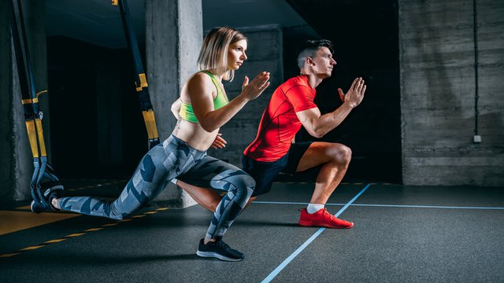

video ejemplo>
FUNCIONAL
El entrenamiento funcional (también conocido como entrenamiento de movilidad o entrenamiento de capacidad funcional) es una metodología de entrenamiento que se centra en desarrollar habilidades y fuerza para realizar movimientos y actividades cotidianas de manera efectiva y segura. Se enfoca en mejorar la capacidad del cuerpo para realizar tareas funcionales, es decir, aquellos movimientos y acciones que se realizan en la vida diaria, como levantar objetos, caminar, correr, saltar, subir escaleras, entre otros.
video de ejemplo
MUSCULACION
El entrenamiento de musculación se centra en desarrollar y fortalecer los músculos del cuerpo, lo que mejora la fuerza y la forma física. Es un tipo de ejercicio que se enfoca en el desarrollo de la masa muscular y la resistencia, utilizando ejercicios específicos y el uso de pesas o máquinas de entrenamiento.
video de ejemplo
CALISTENIA
La calistenia se refiere a un conjunto de ejercicios físicos que buscan desarrollar agilidad y fuerza física a través del uso del propio peso corporal. No se centra en el sobre-esfuerzo, sino en el movimiento de los músculos para lograr un entrenamiento equilibrado y efectivo